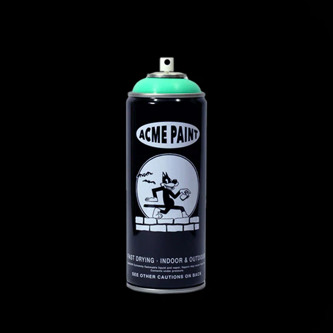
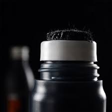
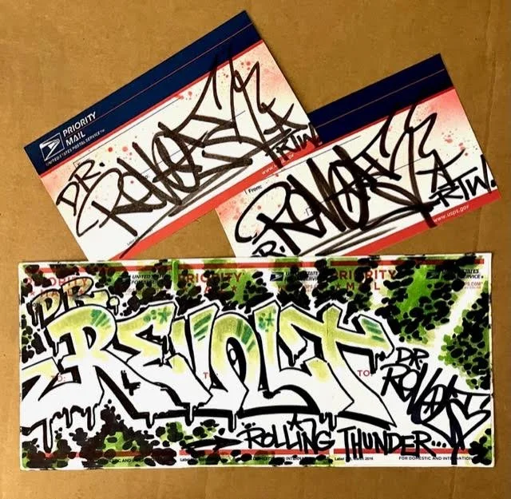
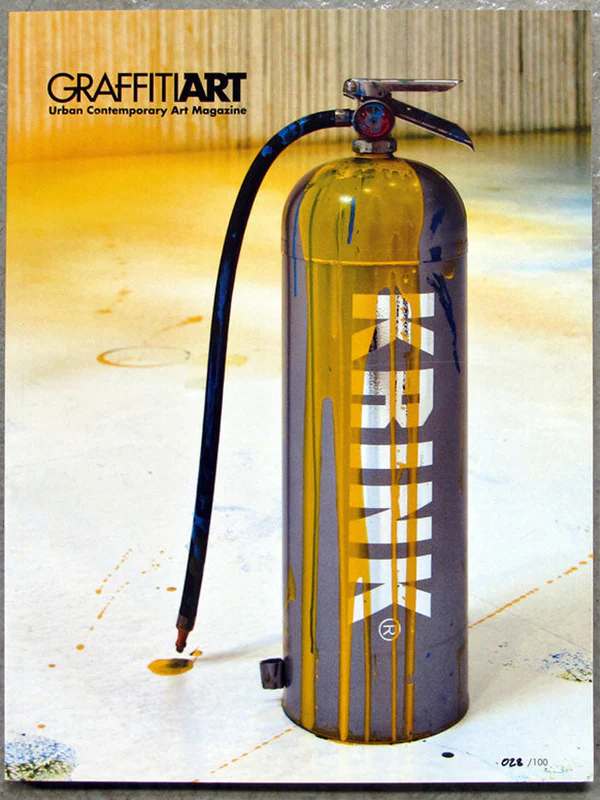

Bazgroły potrafią przyjmować najróżniejsze formy, a w dużej mierze jest to zasługa ciekawego zasobu narzędzi, których to decydują się używać sprawcy.
Farba w puszce
Farba w sprayu to dla wielu najbardziej klasyczne narzędzie do destrukcji czystych powierzchni. Jej sporym atutem jest możliwość kreślenia na praktycznie każdej nawierzchni, o ile nie jest całkowicie mokra.

Marker
Marker jest narzędziem podobnym do znanych wszystkim długopisów i flamastrów, jednak niektóre marki zmieniły go w dedykowaną broń do atakowania płaskich powierzchni bohomazami. Bazgroły wychodzące spod filca markera potrafią do złudzenia przypominać ręczny podpis, co czyni je dość klasycznym narzędziem

Mop
Mop, zwany w Europie squeezerem, to przyrząd dość podobny do markera, zwłaszcza swoim rozmiarem. Różni go duży, gąbkowaty filc oraz miękka obudowa, służąca do wyciskacia dużej ilości farby lub tuszu. Bazgroły tworzone mopem rozpoznamy po obłym kształcie kreski i często występujących zaciekach

Wlepy
Wlepy, czyli naklejki, to mniej zauważalna i wygodna w zastosowaniu metoda szpecenia otoczenia. Twórcy umieszczają lub drukują na nich swoje kreacje lub podpisy, a umieszczenie ich to kwestia błyskawicznego wlepienia w wybrane miejsce. Ta forma jest zwykle jedynie małym dodatkiem do arsenału, gdyż jej użycie nie generuje dużych emocji ani zauważalności.

Gaśnica
Gaśnica to dość rzadko spotykane narzędzie, które daje spektakularne i ciężkie do przeoczenia efekty. Owocem jej użycia są wielkie, nieskomplikowane i często koślawe napisy. Tu jednak chodzi stricte o skalę tworzonego bazgrołu i jego kłującą dla oka obecność na płótnie miasta.
